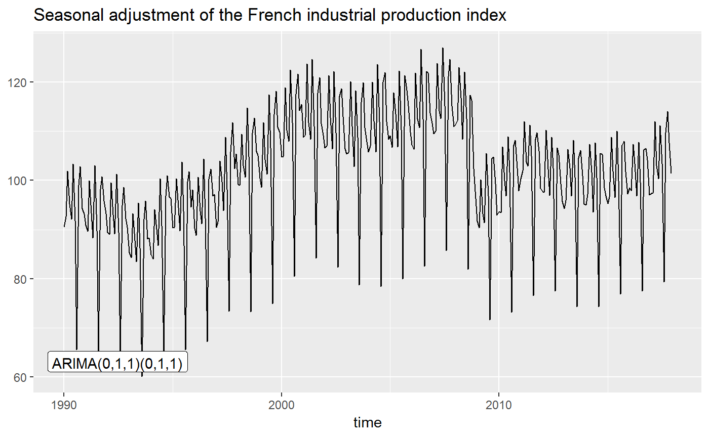

Function to add directly to the plot the ARIMA model used in the pre-adjustment process of the seasonal adjustment.
geom_arima(mapping = NULL, data = NULL, stat = "arima", geom = c("text", "label"), position = "identity", ..., method = c("x13", "tramoseats"), spec = NULL, frequency = NULL, message = TRUE, x_arima = NULL, y_arima = NULL, show.legend = NA, inherit.aes = TRUE)
| mapping | Set of aesthetic mappings created by aes() or
aes_(). If specified and |
|---|---|
| data | A |
| stat | The statistical transformation to use on the data for this layer, as a string. |
| geom | character. The geometric to use to display the data:
|
| position | Position adjustment, either as a string, or the result of a call to a position adjustment function. |
| ... | Other arguments passed on to layer(). These are
often aesthetics, used to set an aesthetic to a fixed value, like
|
| method | the method used for the seasonal adjustment. |
| spec | the specification used for the seasonal adjustment. See x13() or tramoseats(). |
| frequency | the frequency of the time series. By default ( |
| message | a |
| x_arima, y_arima | position of the text of the ARIMA model. By default, the first position of the |
| show.legend | logical. Should this layer be included in the legends?
|
| inherit.aes | If |
With the parameter geom = "text", the ARIMA model used in the pre-adjustment process of the seasonal adjustment are directly added to the plot. With geom = "label" a rectangle is drawn behind the ARIMA model, making it easier to read.
p_sa_ipi_fr <- ggplot(data = ipi_c_eu_df, mapping = aes(x = date, y = FR)) + geom_line() + labs(title = "Seasonal adjustment of the French industrial production index", x = "time", y = NULL) + geom_sa(color = "red", message = FALSE) # To add the ARIMA model p_sa_ipi_fr + geom_arima(geom = "label", x_arima = - Inf, y_arima = -Inf, vjust = -1, hjust = -0.1, message = FALSE)